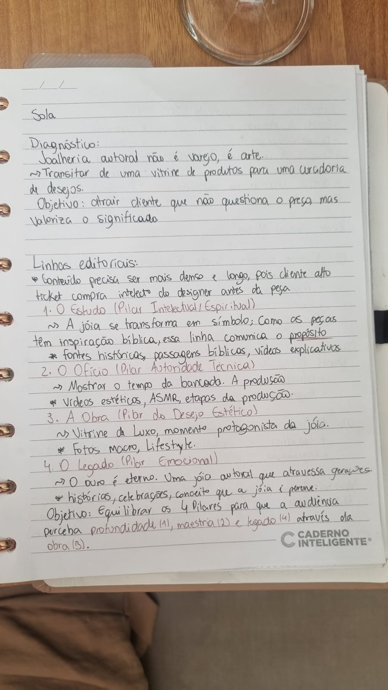
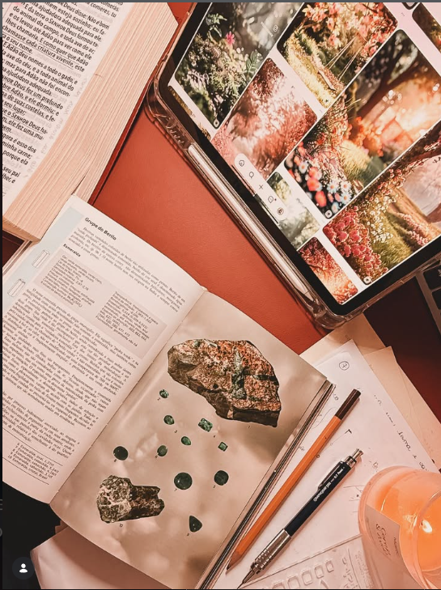

Antes da joia, existe a história.
A Sola nasceu de um encontro improvável: engenharia, fé e as mãos que sempre desejaram dar forma ao invisível. Esta é a história de Wanessa e do mandato que a trouxe até aqui.
Wanessa não nasceu ourives.
Ela nasceu engenheira. Formada pela Universidade Federal, com anos de carreira técnica e raciocínio analítico. Mas existia uma inquietação que a precisão da engenharia não resolvia — uma vontade antiga de criar com as mãos algo que significasse mais do que função.
Em 2024, durante um período de oração e busca, a visão ficou clara: usar o ouro como linguagem. Não decoração. Não ostentação. Linguagem. Uma forma de dizer com as mãos o que a voz não alcança.

Cada peça começa em oração.
Antes do maçarico, há Escritura. Antes da laminação, há jejum. A Sola não tenta parecer espiritual — ela nasce de dentro de um processo que é, em si, um ato de fé.
Não existe coleção sem texto bíblico que a fundamente. Não existe peça sem uma palavra que a anteceda. E não existe cliente que receba ouro sem receber, junto, a história que deu origem àquela forma.
Da bancada para o mundo.
"A Sola não é uma joalheria que faz peças religiosas. É um ministério artístico materializado em ouro."
Engenharia
Anos de formação técnica que construíram a base da precisão que hoje vive em cada milímetro de ouro.
O Chamado
Em 2024, durante um período de busca espiritual, Wanessa recebeu a clareza: o ouro seria seu instrumento de expressão de fé.
A Bancada
Meses de formação em ourivesaria, fundição, laminação e cravação. A técnica encontrou a intenção.
Coleção Bara
A primeira coleção nasce: "Bara" — aquilo que recebe forma. 10 peças sob encomenda, cada uma precedida por uma revelação bíblica.
Missões
5% de cada peça vai para obras missionárias. A beleza não termina em quem veste.
A história está sendo escrita.
A Sola é apenas o começo. Cada coleção será uma nova revelação. Cada peça, uma história. Se você sente que faz parte dessa narrativa, entre para a lista VIP.